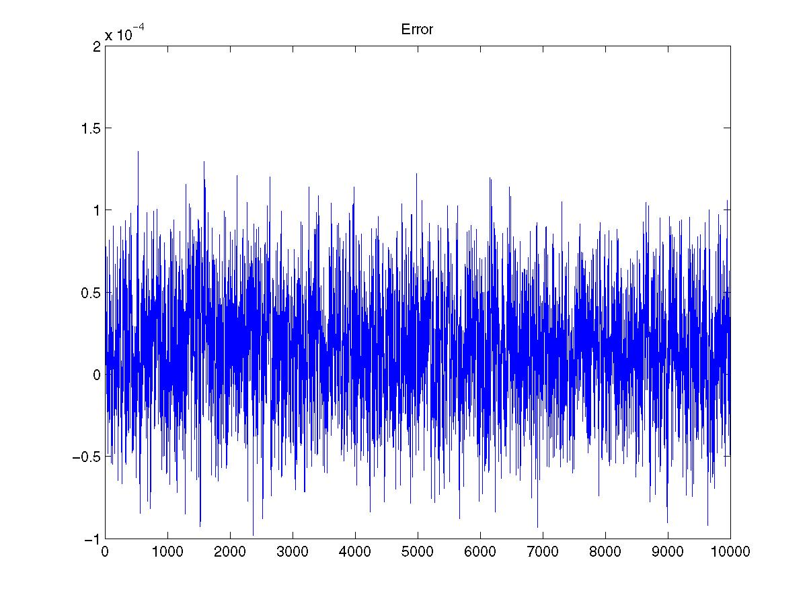

A Fixed Point FIR FilterI'll assume you know what an FIR filter is and how to write a mex file. You should be able to follow even if you can't write a mex file. Take a look at the code. It implements an eight point FIR filter with a sign bit and 15 decimal bits. The accumulator is 30 bits, but it's converted back to 16 bits after the sum is complete. This happens at accum>>15. Assuming we're not going to worry about overflow any, the rest of the fixed point logic is the same as the floating point logic. But you just need to make sure to convert from floating point to fixed point and then back. This is done by multiplying by 15 bits (2^15) to convert to fixed. Then divide by 2^15 on the way out.
The drawings above show the first two stages of the FIR filter. It uses a rotating buffer. The 'start' indexing variable always points to the start of the delay line. So in the first picture, start is really at the start. If you look at the code, you'll see that it's decremented each cycle of the loop. So, it iterates backwards over the loop, wrapping back to the beginning when it reaches the end. The filter tap index always starts at 0 and increments all the way through to the end. In the second picture, start is pointing to the second element. This is where the new sample is placed. So x1 is multiplied by h0 and x0 is multiplied by h1 - x1h0+x0h1. The next iteration would be x2h0+x1h1+x0h3 with start after the second delay. Notice that the variable that loops through the accumulation is also the start pointer variable. This means the loop has to stop one iteration early so that the start variable ends up rotating positively through the array after each accumulation. By the time x0 is overwritten, it will have passed through the filter; so, we don't need to worry about it. That's how circular addressing works. You make the delay line just long enough so that when the oldest data point is no longer needed, it gets overwritten. It is convenient to do this in matlab (if you can get access to it) for testing reasons. The plot below shows the error between matlab's double precision filter and the one implemented here. You can see from the matlab code that the original signal had a max of just under one. I kept this function simple so I didn't have to spend all night working on it. Here are a few improvements you can make. You might try an even more optimized algorithm. You could modify it to work similar to matlab's filter function. You'll need to make the filter variable length. And you'll have to pass it in with the signal. You'll also have to pass in the delay line. That way you don't have to do the filtering all in one giant block. You might consider making it IIR. You could set the number of fixed point bits from a function parameter. | |||
|  | |||